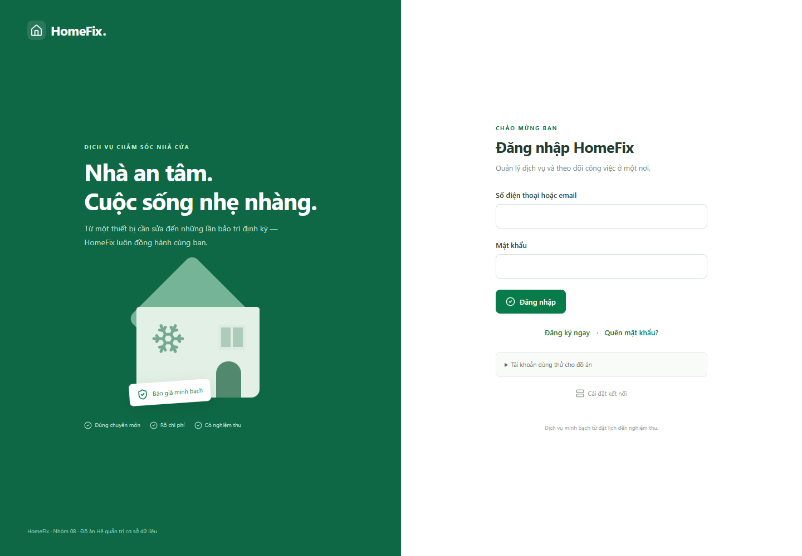

Đăng nhập, hồ sơ và mật khẩu
- Mở ứng dụng. Nhập Số điện thoại hoặc email và Mật khẩu; chọn Đăng nhập.
- Kiểm tra tên vai trò ở đầu màn hình. Nếu sai vai trò, đăng xuất và dùng đúng tài khoản.
- Mở Hồ sơ để cập nhật thông tin được phép. Đổi email khôi phục yêu cầu mật khẩu hiện tại.
- Khi đổi hoặc khôi phục mật khẩu bằng OTP, nhập đúng mã gửi đến email và dùng trong thời hạn. Mã đã sử dụng không dùng lại được.
- Đăng xuất khi kết thúc, đặc biệt trên máy dùng chung.
| Vai trò | Email demo |
|---|---|
| KH | kh@homefix.local |
| KTV | ktv@homefix.local |
| DPV | dpv@homefix.local |
| CSKH | cskh@homefix.local |
| KT | kt@homefix.local |
| ADMIN | admin@homefix.local |
| GD | gd@homefix.local |
Mật khẩu khởi tạo: HomeFix@123. Nếu đã đổi, khởi tạo lại không đặt lại mật khẩu cũ. Các tài khoản này chỉ phục vụ demo cục bộ. Đăng ký công khai không cho người dùng tự cấp vai trò quản trị.


Màn hình đăng nhập — bấm ảnh để xem kích thước gốc.
Không nhận được OTP
Kiểm tra đúng email và thư rác; chờ theo hướng dẫn trước khi gửi lại. Nếu có lỗi gửi, báo người quản trị kiểm tra provider. Không dùng mã của lần đăng ký cho thao tác đổi mật khẩu. Sai nhiều lần có thể làm mã bị khóa; không tiếp tục đoán mã.